NQ=F 1m 破底翻 · 右肩在 MA20 上
只做日盤 09:30–15:45 ET。破底翻 → 收復粉紅 MA20（約 20 分鐘）→ 離開後右肩踩回 MA20 進場。停損在右肩低點下方，目標 1.5R；持有滿 60 根若收破 MA20 出場。進場若貼著下彎的 5m MA60（40 點內），或夾在下彎空頭排列的 5m MA20/MA30 蓋頭底下（45 點內），或遠低於下彎的 5m MA20（超過 45 點），則略過。五分 MA20 下跌時，追在它上方超過 35 點、或壓在斜率比 −15 更負的蓋子下，也不進。五分粉紅剛上彎、綠線還下彎、兩條差不到 25 點且收盤已在綠線上（均線糾結），整波不進。右肩要先從反彈高點拉回至少 25 點，離開均線 3 根後即可回踩。進場收盤須貼著 1m MA20（高於不超過 20 點）；影線掃到但收盤彈走 30 點那種再等下一腳。大陰線砸上 MA20 不進，等下一根小 K 確認；實體超過 30 點且 5m MA20 下彎則這波作廢。13:00 後不進（午餐後／尾盤假右肩）。5m MA20 上彎時目標 2R，否則 1.5R。只做日盤破底。 每筆附進場當下五分 K 對照。
30d · 2026-07-30 21:32 → 2026-08-28 16:59 ET · bars=28373
筆數8
勝率75.0%
總點數+395.2
勝/負6/2
QA 5筆 +279.2 · QB 1筆 +50.2 · QC 2筆 +65.7
漏斗：破底 212 → 深度夠 38 → 收復MA20 38 → 右肩回踩 8 → 進場 8（沒離開 8 · 沒收復 0 · 沒守住 5 · 風險 0 · 貼下彎5mMA60 2 · 貼下彎5mMA20/30蓋頭 4 · 遠低下彎5mMA20 8 · 下跌5m位置 8 · 五分糾結 1 · 間隔 0 · 追刀 6 · 午後 27 · 時段 873）
target1m右肩MA20QA5m對照
entry 28470.00 （右肩踩 1m MA20 28453.65）
stop 28406.75 (−63.2 pts，右肩低點下方）
target 28596.50 (2.0R)
exit 28596.50 target
破底 08-03 09:32 low 28313.50 / 2h低 28383.50
收復 09:35 → 右肩 09:50
MA5 28479.0 / MA10 28472.2 / MA20 28453.7 / MA60 28456.1
5m MA20 28455.7 上彎 +7.8 （進場 − 5mMA20 = +14.3）
5m MA30 28452.4 下彎 -11.6 （進場 − 5mMA30 = +17.6）
5m MA60 28494.8 下彎 -6.8 （進場 − 5mMA60 = -24.8）
1m K
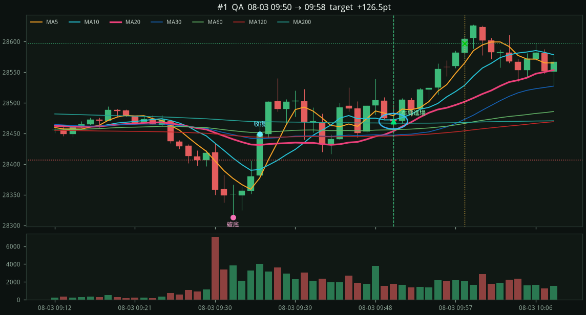
進場當下 5分K（粉紅 = 5m MA20）
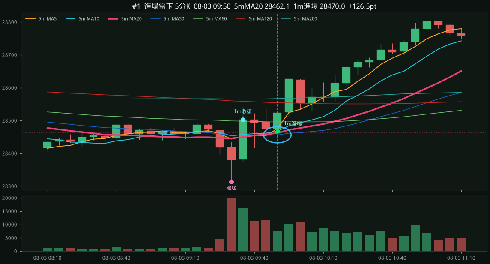
target1m右肩MA20QA5m對照
entry 29518.50 （右肩踩 1m MA20 29503.45）
stop 29487.50 (−31.0 pts，右肩低點下方）
target 29580.50 (2.0R)
exit 29580.50 target
破底 08-06 09:33 low 29241.25 / 2h低 29321.50
收復 09:34 → 右肩 10:01
MA5 29522.0 / MA10 29515.0 / MA20 29503.5 / MA60 29407.5
5m MA20 29416.9 上彎 +11.3 （進場 − 5mMA20 = +101.6）
5m MA30 29430.1 上彎 +6.7 （進場 − 5mMA30 = +88.4）
5m MA60 29454.6 下彎 -3.7 （進場 − 5mMA60 = +63.9）
1m K
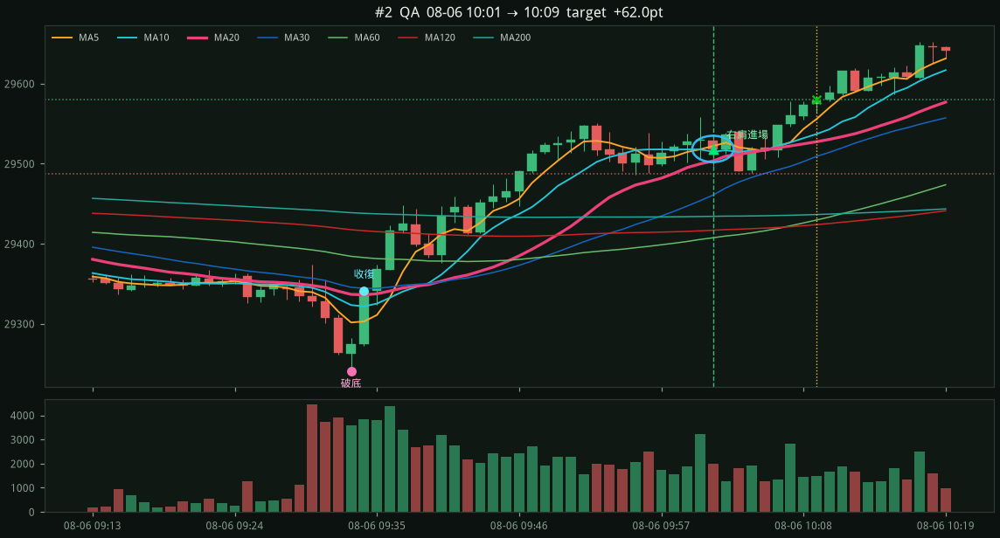
進場當下 5分K（粉紅 = 5m MA20）
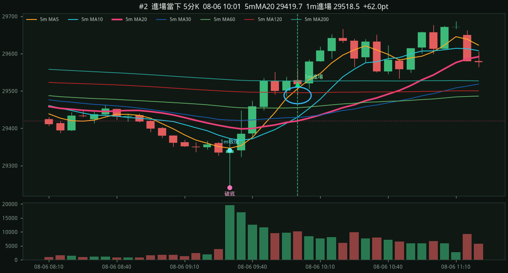
target1m右肩MA20QA5m對照
entry 29805.00 （右肩踩 1m MA20 29787.55）
stop 29744.50 (−60.5 pts，右肩低點下方）
target 29895.75 (1.5R)
exit 29895.75 target
破底 08-10 09:41 low 29718.75 / 2h低 29771.75
收復 09:46 → 右肩 10:00
MA5 29795.4 / MA10 29788.8 / MA20 29787.5 / MA60 29794.3
5m MA20 29795.5 下彎 -24.4 （進場 − 5mMA20 = +9.5）
5m MA30 29820.5 下彎 -21.7 （進場 − 5mMA30 = -15.5）
5m MA60 29877.0 下彎 -18.2 （進場 − 5mMA60 = -72.0）
1m K
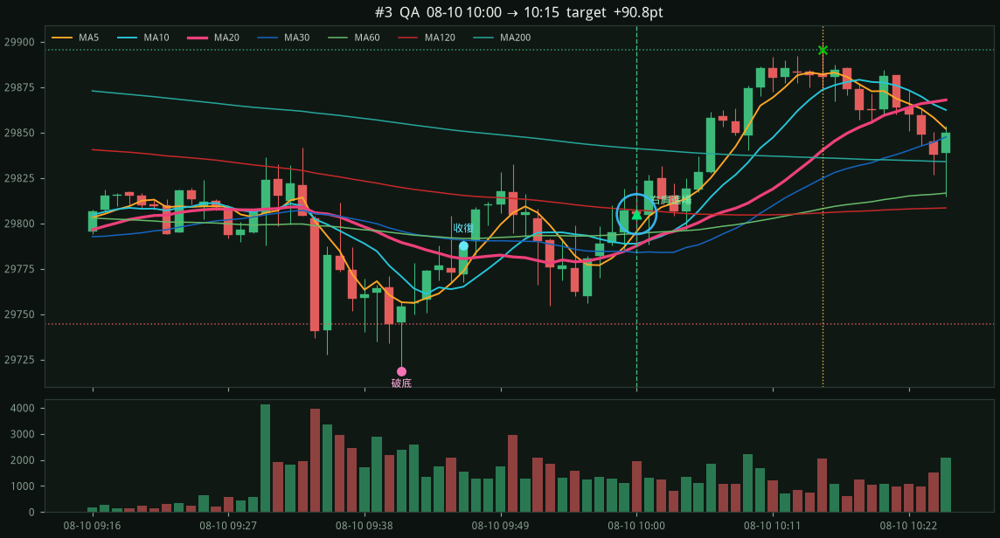
進場當下 5分K（粉紅 = 5m MA20）
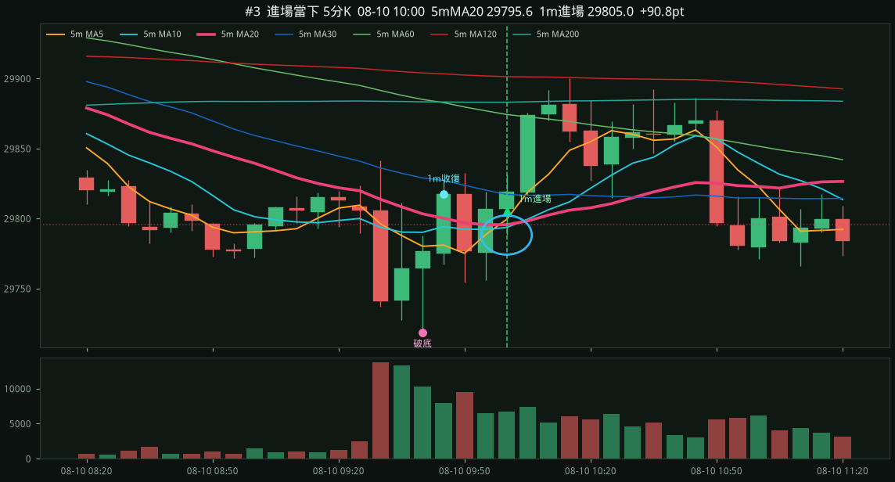
be_stop1m右肩MA20QA5m對照
entry 30242.25 （右肩踩 1m MA20 30229.50）
stop 30218.25 (−24.0 pts，右肩低點下方）
target 30278.25 (1.5R)
exit 30242.25 be_stop
破底 08-14 09:37 low 30169.75 / 2h低 30206.25
收復 09:42 → 右肩 09:50
MA5 30251.0 / MA10 30248.5 / MA20 30229.5 / MA60 30250.5
5m MA20 30252.7 下彎 -7.9 （進場 − 5mMA20 = -10.5）
5m MA30 30254.0 下彎 -3.2 （進場 − 5mMA30 = -11.8）
5m MA60 30242.9 上彎 +0.5 （進場 − 5mMA60 = -0.7）
1m K
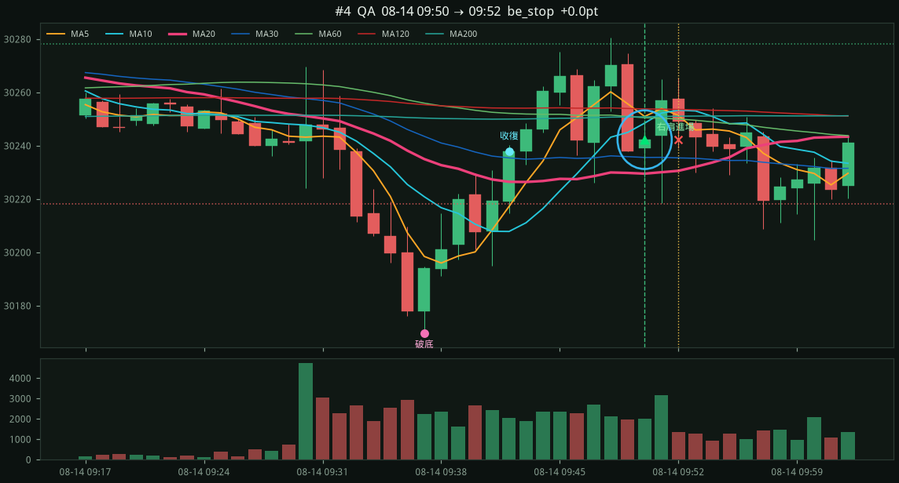
進場當下 5分K（粉紅 = 5m MA20）
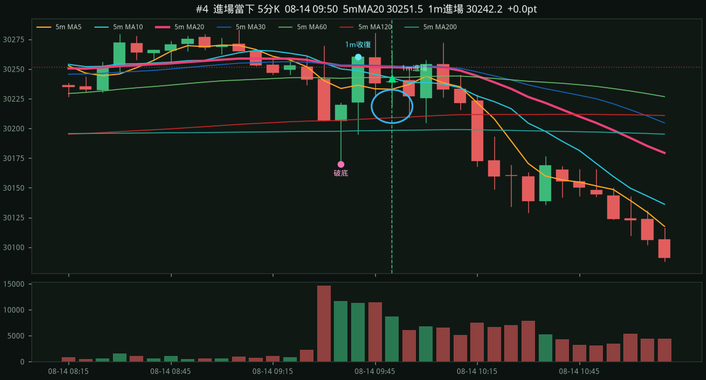
be_stop1m右肩MA20QC5m對照
entry 29596.75 （右肩踩 1m MA20 29589.21）
stop 29540.25 (−56.5 pts，右肩低點下方）
target 29709.75 (2.0R)
exit 29619.35 be_stop
破底 08-19 10:15 low 29375.75 / 2h低 29510.25
收復 10:16 → 右肩 11:44
MA5 29570.8 / MA10 29576.4 / MA20 29589.2 / MA60 29593.2
5m MA20 29541.4 上彎 +12.6 （進場 − 5mMA20 = +55.3）
5m MA30 29567.2 下彎 -23.7 （進場 − 5mMA30 = +29.6）
5m MA60 29574.6 上彎 +6.2 （進場 − 5mMA60 = +22.2）
1m K
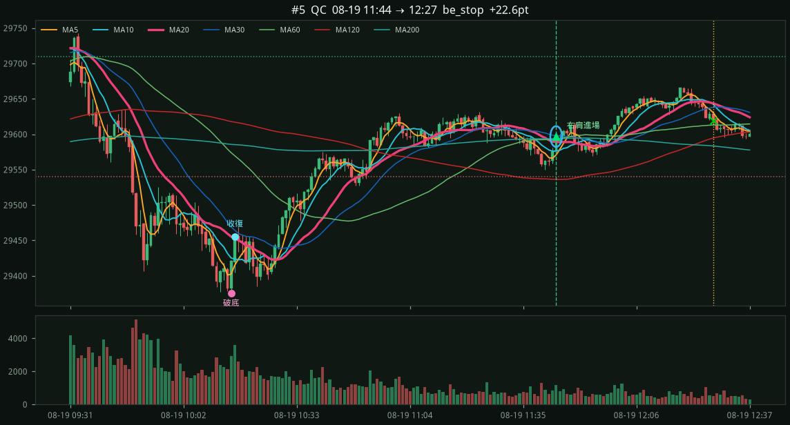
進場當下 5分K（粉紅 = 5m MA20）
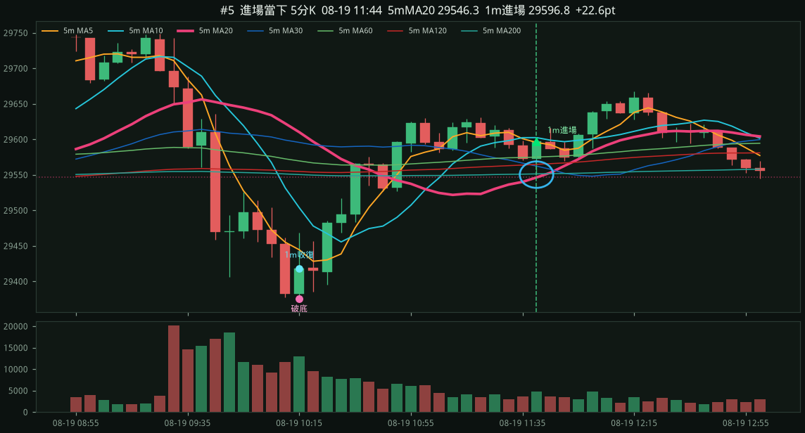
target1m右肩MA20QC5m對照
entry 29061.00 （右肩踩 1m MA20 29059.25）
stop 29032.25 (−28.8 pts，右肩低點下方）
target 29104.12 (1.5R)
exit 29104.12 target
破底 08-24 09:53 low 28946.75 / 2h低 29171.50
收復 09:58 → 右肩 11:18
MA5 29053.6 / MA10 29056.8 / MA20 29059.2 / MA60 29061.0
5m MA20 29035.4 下彎 -35.1 （進場 − 5mMA20 = +25.6）
5m MA30 29089.6 下彎 -29.5 （進場 − 5mMA30 = -28.6）
5m MA60 29150.3 下彎 -16.6 （進場 − 5mMA60 = -89.3）
1m K

進場當下 5分K（粉紅 = 5m MA20）

be_stop1m右肩MA20QA5m對照
entry 29348.75 （右肩踩 1m MA20 29331.29）
stop 29291.50 (−57.2 pts，右肩低點下方）
target 29434.62 (1.5R)
exit 29348.75 be_stop
破底 08-25 09:30 low 29279.25 / 2h低 29294.50
收復 09:31 → 右肩 09:40
MA5 29336.5 / MA10 29344.9 / MA20 29331.3 / MA60 29330.5
5m MA20 29343.6 下彎 -10.6 （進場 − 5mMA20 = +5.2）
5m MA30 29348.3 下彎 -3.5 （進場 − 5mMA30 = +0.4）
5m MA60 29349.0 上彎 +6.6 （進場 − 5mMA60 = -0.3）
1m K
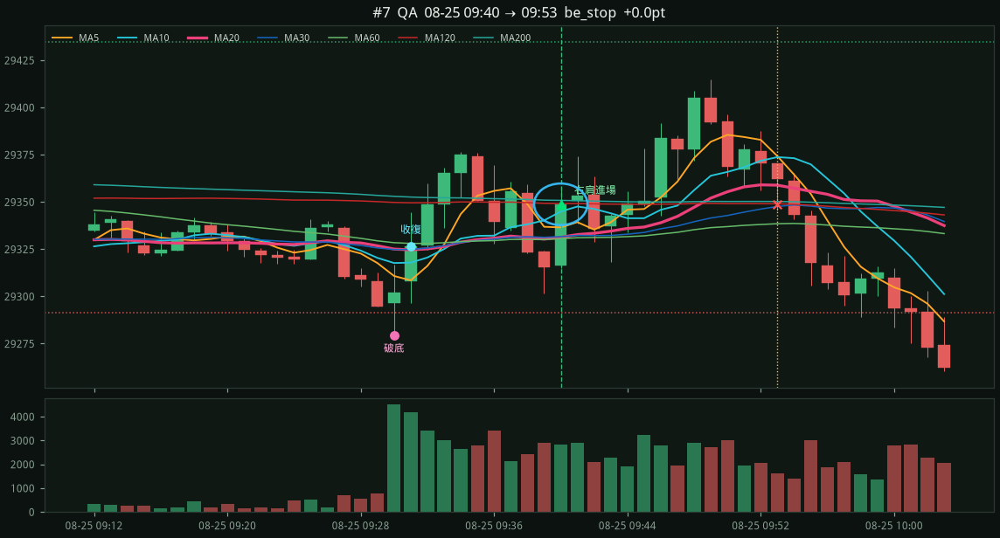
進場當下 5分K（粉紅 = 5m MA20）
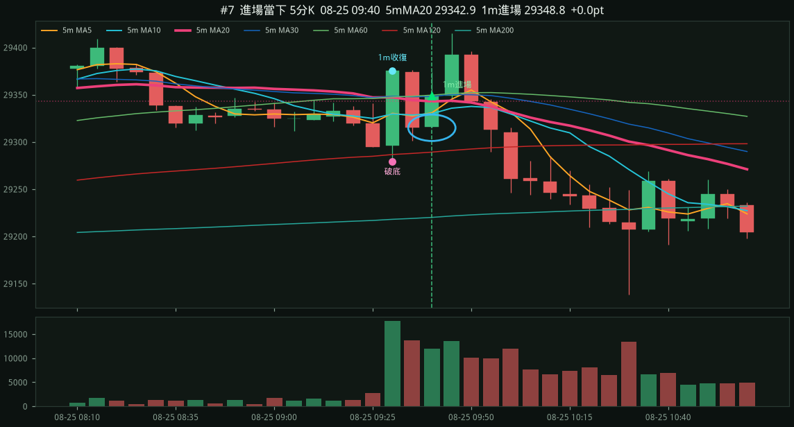
target1m右肩MA20QB5m對照
entry 29627.50 （右肩踩 1m MA20 29598.20）
stop 29594.00 (−33.5 pts，右肩低點下方）
target 29677.75 (1.5R)
exit 29677.75 target
破底 08-28 10:13 low 29505.00 / 2h低 29559.00
收復 10:18 → 右肩 10:28
MA5 29631.2 / MA10 29633.7 / MA20 29598.2 / MA60 29625.9
5m MA20 29637.1 下彎 -10.8 （進場 − 5mMA20 = -9.6）
5m MA30 29635.9 下彎 -1.8 （進場 − 5mMA30 = -8.4）
5m MA60 29624.0 上彎 +0.0 （進場 − 5mMA60 = +3.5）
1m K
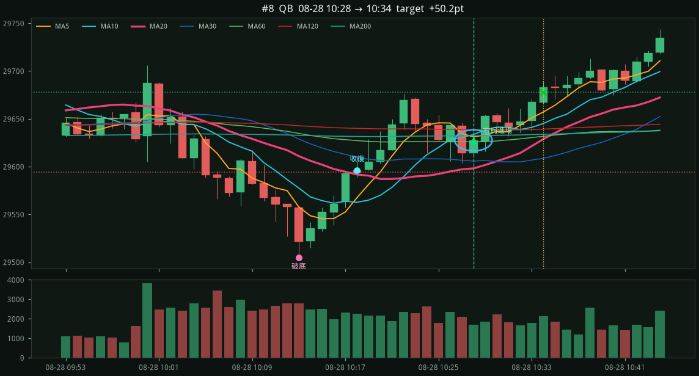
進場當下 5分K（粉紅 = 5m MA20）
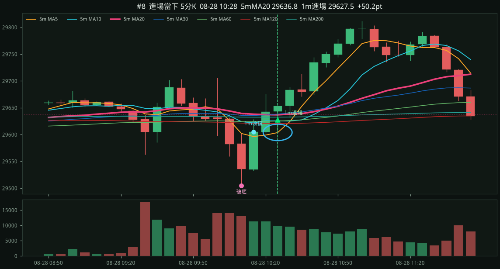